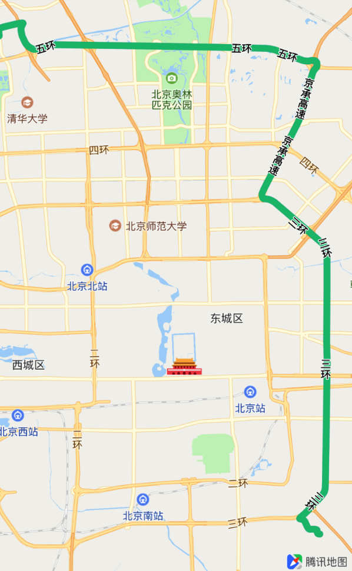
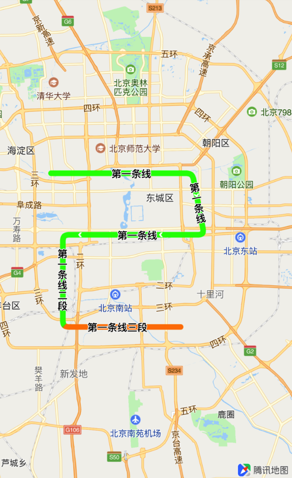
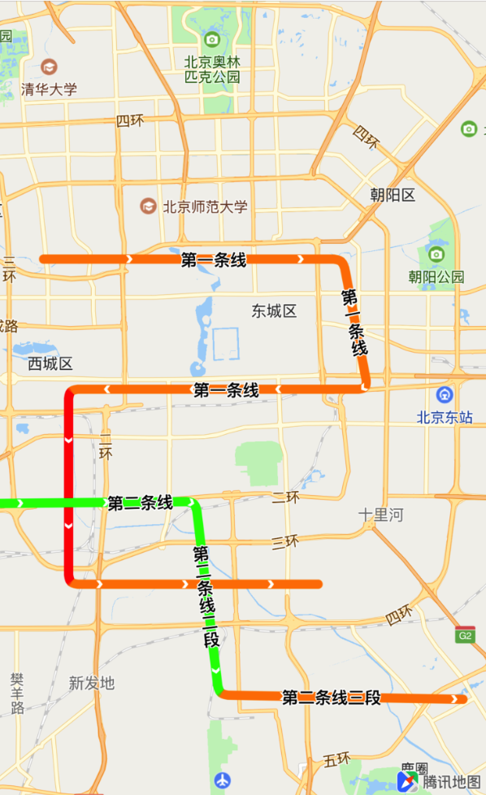

动态路名
路名文本信息标记 QPolylineView 的各路段名字或其他信息显示，可以用于显示导航的多路段名字或者路线规划路段名字等场景，示例如下：

接入接口
路名文本信息是 QPolylineView 里的属性 QText text，用户在创建 QPolylineView 类时对 text 属性进行赋值即可实现路名信息的展示。
/**
* @brief 线的名字属性. 可为线的各子部分显示不同的名字，层级与POI label相同
*/
@property(nonatomic, strong) QText *text;
特别说明：
由于 QText 层级与 POI label 相同，需保证最上层显示的文本信息中 QTextStyle priority 为 QTextPriority_High 以及对应的 overlayview 的 displayLevel 为 QOverlayLevelAboveRoads 或者 QOverlayLevelAboveBuildings 方可正常显示路名信息。
QText 类说明
QText 类包含了文本信息的显示样式和数据，用户可以自行配置对应的信息与数据。
| 属性 | 说明 |
|---|---|
| QTextStyle *style | 文本信息的显示样式 |
| NSArray<QSegmentText *> *segments | 文本信息的数据。可沿路径显示，可在每段(QSegmentText)显示不同的文本 |
初始化 QText 实例：
// 创建 QSegmentText 数组
NSMutableArray<QSegmentText *> *segs = [NSMutableArray array];
QTextStyle *style = [[QTextStyle alloc] init];
......
......
// 初始化 QText 实例
QText *route = [[QText alloc] initWithSegments:segs];
route.style = style;
QTextStyle 类说明
用户可在 QTextStyle 类中配置自定义的文本信息，文本信息的显示样式支持适时修改。
| 属性 | 说明 |
|---|---|
| UIColor *textColor | 字的颜色 |
| UIColor *strokeColor | 字的描边色 |
| CGFloat fontSize | 字的字号，默认14 |
| QTextPriority priority | 字的优先级 |
QTextPriority 特别说明
/**
* @brief 文本显示的优先级. 可用于在文本有碰撞时决定压盖关系. 当多个文本间有碰撞时更高的优先显示.
* 默认为QTextPriority_High
* @note 仅在文本信息间发生碰撞时，才需将低层级的文本信息priority设为QTextPriority_Normal
*/
typedef enum QRTextPriority {
QTextPriority_Normal, ///< 普通优先级
QTextPriority_High ///< 高优先级
} QTextPriority;
当只绘制一条路线的路名时， 请保持 priority 为 QTextPriority_High，否则文本信息无法显示在路线上。
实例化示例：
QTextStyle *style = [[QTextStyle alloc] init];
style.textColor = [UIColor blackColor];
style.strokeColor = [UIColor whiteColor];
style.fontSize = 12;
style.priority = QTextPriority_High; /// priority 默认值为 QTextPriority_High
QSegmentText 类说明
用户通过设置 QSegmentText 里的属性对相应的轨迹点串的路名信息进行设定。
| 属性 | 说明 |
|---|---|
| int startIndex | 本段在轨迹点串中的起始下标，从0开始 |
| int endIndex | 本段在轨迹点串中的终止下标，请确保大于startIndex |
| NSString *name | 本段的文本内容 |
实例化示例：
QSegmentText *s1 = [[QSegmentText alloc] init];
// 起点为 0 索引值的polyline坐标
s1.startIndex = 0;
// 终点为 3 索引值的polyline坐标
s1.endIndex = 3;
// 这段路线的路名
s1.name = @"第一条线";
传入路名文本信息
用户获取了相应的路段路名信息后，在 mapView: viewForOverlay: 接口把路名文本信息传入，示例如下：
- (QOverlayView *)mapView:(QMapView *)mapView viewForOverlay:(id<QOverlay>)overlay
{
if ([overlay isKindOfClass:[QPolyline class]])
{
QTexturePolylineView *polylineRender = [[QTexturePolylineView alloc] initWithPolyline:overlay];
polylineRender.borderColor = [UIColor colorWithRed:1 green:0.2 blue:0.12 alpha:1];
......
......
// polylineRender的displayLevel需要设置为 QOverlayLevelAboveBuildings 或 QOverlayLevelAboveRoads
// polylineRender.displayLevel = QOverlayLevelAboveRoads;
polylineRender.displayLevel = QOverlayLevelAboveBuildings;
polylineRender.drawSymbol = YES;
polylineRender.drawType = QTextureLineDrawType_ColorLine;
// 创建 QSegmentText 数组
NSMutableArray<QSegmentText *> *segs = [NSMutableArray array];
QTextStyle *style = [[QTextStyle alloc] init];
QSegmentText *s1 = [[QSegmentText alloc] init];
......
......
// 初始化 QText 实例
QText *route = [[QText alloc] initWithSegments:segs];
route.style = style;
// 传入相应文本信息
polylineRender.text = route;
return polylineRender;
}
return nil;
}
效果示例：

文本信息碰撞
当绘制的两个 polylineView 相交时，两个 polylineView 的文本信息便有可能发生碰撞。需要显示的文本信息需将 QTextStyle 的 priority 设置为 QTextPriority_High，不需要显示的文本信息则将 QTextStyle 的 priority 设置为 QTextPriority_Normal。文本信息显示样式支持动态修改。
如：第一条线的 priority 为 QTextPriority_Normal，第二条线的 priority 为 QTextPriority_High，其中两段的文本信息发生碰撞，只会显示第一条路线的文本信息。效果如下：

更详细的示例请参考 demo 里的 RouteNameViewController 示例。